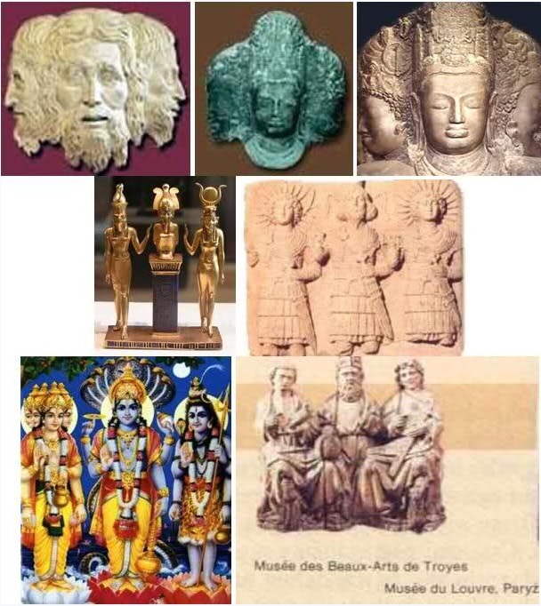

Trójca
Na rozwój podstaw dogmatu o Trójcy Świętej miały wpływ dwa pierwsze sobory w IV stuleciu po Chrystusie.
Sobór w Nicei w 325 r. zwołał sam cesarz Konstantyn, który za wszelką cenę dążył do ocalenia jedności imperium, a do tego niezbędna była jedność doktrynalna samego Kościoła.
W 381 r. odbył się z kolei pierwszy sobór konstantynopolitański, który dotyczył boskości ducha Świętego.
Sobór potwierdził i na nowo sformułował nicejskie wyznanie wiary. Oto część tego wyznania, dotycząca ducha Świętego:
„Wierzę w Ducha Świętego, Pana i Ożywiciela, który od Ojca i Syna pochodzi. Który z Ojcem i Synem wspólnie odbiera uwielbienie i chwałę; który mówił przez Proroków”.
Na postanowienia nicejsko-konstantynopolitańskie oraz późniejszych soborów i synodów kościół powołuje się do dziś.
W najnowszym katechizmie czytamy:
„Trójca jest jednością. Nie wyznajemy trzech bogów, ale jednego Boga w trzech Osobach: Trójcę współistotną (…). Ojciec jest tym samym, co Syn, Syn tym samym, co Ojciec, Duch Święty tym samym, co Ojciec i Syn, to znaczy jednym Bogiem, co do natury” (str. 69).
Czy ktoś o zdrowym umyśle jest w stanie to zrozumieć?
Odkrycia archeologiczne pokazują trójcę już w starożytnym Babilonie ukrytą pod postacią trójkąta równoramiennego, wskazującą na równość trzech bogów.
Ten sam symbol przejął kościół rzymski.
Nauka o trójcy zakorzeniona jest w cywilizacji Babilonu, Indii, Chaldei, Fenicji, Egiptu, Rzymu, Skandynawii, Germanii czy u Indian.
Jest powszechną cechą kultów pogańskich, jej (trójcy) wyraźne początki znajdujemy w religiach pogańskich. Na przykład w „Słowniku mitów i tradycji kultury” Władysława Kopalińskiego pod hasłem: trójca, czytamy:
"Triada, związek, zespół, grupa trzech (osób, rzeczy, elementów), podniośle trójka, występująca w niektórych religiach grupa trzech bóstw: triada żeńska - ojciec, matka i syn (np. egipska: Ozyrys, Izyda, Horus) albo męska (np. babilońska: Ea, Marduk, Gibil; grecka: Zeus, Posejdon, Hades), czy wreszcie koncepcja jednego boga w trzech osobach, jak w hinduizmie: Brahma, Wisznu i Siwa, czy chrześcijańska Trójca Święta: Ojciec, Syn i Duch Święty, której dogmat w głównych zarysach ustaliły sobory: Nicejski w 325 i Konstantynopolski w 381 roku."
Koncepcja trójcy, poprzez Babilon rozpowszechniła się na całym świecie, dlatego też Babilon w Biblii jest symbolem odstępstwa, gdyż głównym kultem Babilonu jest TRÓJCA.

.
W Biblii nie znajdziemy Boga w trójcy świętej!
Zarówno Stary, jak i Nowy Testament nie daje podstaw dla dogmatu o „Bogu w Trójcy Jedynym”, który w kościele rzymskim, a później w kolejnych, powstał dopiero w IV stuleciu po Chrystusie.
Wystarczy spojrzeć na historię dogmatów, aby zauważyć jak ogromny wpływ na ich powstanie miała filozofia platońska, politeizm starożytnych religii oraz względy polityczne.
Już w Starym Testamencie czytamy:
„Słuchaj, Izraelu! Jahwe jest naszym Bogiem — JHWH jedyny” (5 Mojż. 6:4, BT).
Stanowisko to potwierdził Chrystus:
„Jezus odpowiedział: Pierwsze przykazanie jest to: Słuchaj, Izraelu! Pan, Bóg nasz, Pan jeden jest.” (Marka 12:29).
Zatem, w kogo powinniśmy wierzyć?
Kogo powinniśmy poznać?
Komu oddawać cześć?
Czy Ojciec jest tym samym, co Syn, a duch Święty tym samym, co Ojciec i Syn — jednym Bogiem?
Po pierwsze, mimo katolickiego wyznania wiary — „Wierzę w Duch Świętego, Pana i Ożywicieia” — w Słowie Bożym nie znajdujemy dlań uzasadnienia.
Pan Jehoszua (Jezus) powiedział: „Wierzycie w Boga i we mnie wierzcie!” (Jana 14:1)
Chrystus NAKAZUJE i zachęca do wiary w Boga i w Niego, ale nie w ducha Świętego!
Określenia zaś Bóg i Pan dotyczą wyłącznie Boga Ojca i Jego Syna, Pana Jehoszua. Dobitnie podkreśla to apostoł Paweł:
„Wierzymy, że nie ma żadnego innego boga, oprócz Jednego. Bo chociaż nawet są tak zwani bogowie, czy to na niebie, czy na ziemi (…) wszakże dla nas istnieje tylko jeden Bóg Ojciec, z którego pochodzi wszystko i dla którego istniejemy, i jeden Pan, Jezus Chrystus, przez którego wszystko istnieje i przez którego my także istniejemy” (1 Kor. 8:4-6).
Po drugie, według słów Zbawiciela, życie wieczne zależne jest od „poznania jedynego prawdziwego Boga i Jezusa Chrystusa” (Jana 17:3).
Chrystus pomija ducha Świętego.
Czy jest do pomyślenia, aby to uczynił, gdyby duch Święty był tym samym, co Ojciec i Syn — jedynym Bogiem w trójcy świętej?
Po trzecie, również, kiedy Zbawiciel wypowiada się o osobach, które należy czcić, mówi, „aby wszyscy czcili Syna, jak czczą Ojca. Kto nie czci Syna, ten nie czci Ojca, który go posłał” (Jana 5:23).
Cześć, uwielbienie i chwałę winniśmy Bogu i Jego Synowi.
„Temu, który siedzi na tronie, i Barankowi, błogosławieństwo i cześć, i chwała, i moc na wieki wieków” (Obj. 5:13).
Jeśli duch Święty byłby współistotny Bogu Ojcu i Synowi Bożemu to, dlaczego Biblia na ten temat milczy?
W końcowym fragmencie księgi Objawienia, która ukazuje nam nową rzeczywistość (Obj. 21:1-2). Autor pisze:
„I pokazał mi rzekę wody żywota, czystą jak kryształ, wypływają z tronu Boga i Baranka (…) I nie będzie już nic przeklętego. Będzie w nim tron Boga i Baranka, a słudzy jego służyć mu będą” (Obj. 22:3).
Czyż to niezastanawiające, że pomimo ukazania apostołowi zbawionych, aniołów, Boga i Baranka, nie widzi ducha Świętego, jako odrębnej istoty? To samo zjawisko znajdujemy w Daniela 7:9, 13-14.
Ponadto duch Święty nie posiada też tronu!
Skąd ta dyskryminacja?
Jedno jest pewne. Biblia ukazuje Jednego - Jedynego prawdziwego Boga.
Ten „Jedyny, który ma nieśmiertelność, mieszka w światłości niedostępnej, którego nikt z ludzi nie widział i widzieć nie może” (1Tym. 6:16).
Jehoszua uczył, że jest całkowicie zależny od Ojca:
„Tedy Jezus odezwał się i rzekł im: Zaprawdę, zaprawdę, powiadam wam, nie może Syn sam od siebie nic czynić, tylko to, co widzi, że Ojciec czyni; co bowiem On czyni, to samo i Syn czyni.” (Jana 5:19).
Otrzymał żywot od Ojca:
„Jak bowiem Ojciec ma żywot sam w sobie, tak dał i Synowi, by miał żywot sam w sobie.” (Jana 5:26).
Uczył, że jako posłaniec, pełni wolę Boga:
„Nie mogę sam z siebie nic uczynić. Jak słyszę, tak sądzę, a sąd mój jest sprawiedliwy, bo staram się pełnić nie moją wolę, lecz wolę tego, który mnie posłał.” (Jana 5:30).
Jednocześnie dodaje, że:„poseł nie jest większy od tego, który go posłał” (Jana 13:16).
„Ojciec mój (…) jest większy nad wszystkich” (Jana 10:29).
I wreszcie najważniejsze w tym rozważaniu stwierdzenie Chrystusa:
„Ojciec większy jest niż Ja” (Jana 14:28).
Tak, więc kto kłamie?
Kościół rzymsko-katolicki, który twierdzi, że Chrystus jest równy Bogu Ojcu, czy sam Chrystus, który twierdzi, że nie jest równy Bogu Ojcu?
Pan Jehoszua nazywa swojego Ojca „jedynym prawdziwym Bogiem” (Jana 17:3).
Również po Zmartwychwstaniu podkreśla swą zależność od Boga:
„Wstępuję do Ojca mego i Ojca waszego, do Boga mego i Boga waszego” (Jana 20:17 por. Obj. 3:12, 5:9-10).
Jak widzimy także, Jehoszua ma swojego Boga!
Często słyszy się, że Chrystus był poddany Bogu tylko podczas swojej ziemskiej egzystencji, ale po wniebowstąpieniu został wywyższony i już nie podlega Ojcu.
Czy tak jest w istocie? Bynajmniej!
Apostoł Paweł stwierdza, że „głową Chrystusa jest Bóg” (1 Kor. 11:3).
To „Jeden Bóg i Ojciec wszystkich (a więc i Jehoszua), który jest ponad wszystkimi…” (Efezjan 4:6).
A gdy „nastanie koniec (z chwilą drugiego przyjścia Jehoszua), odda władzę królewską Bogu Ojcu, gdy zniszczy wszelką zwierzchność oraz wszelką władzę i moc. Bo On musi królować, dopóki nie położy wszystkich nieprzyjaciół pod stopy swoje (…) Wszystko bowiem (Bóg) poddał pod stopy jego (czyli Jehoszua). Gdy zaś mówi, że wszystko zostało poddane, rozumie się, że oprócz tego, który mu wszystko poddał. A gdy mu wszystko zostanie poddane, wtedy też i sam Syn będzie poddany temu, który mu poddał wszystko, aby Bóg był wszystkim we wszystkim” (1 Kor. 15:24-28).
Biblia nie mówi ani o „trójcy”, ani „dwójcy”.
Konsekwentnie uczy o Jedynym Bogu. Podkreślał to sam Chrystus. Gdyby było inaczej, byłby nam powiedział: „Jestem Bogiem, we wszystkim równy Ojcu”. Nigdy tego nie uczynił. Przeciwnie! Nazywał siebie Synem Bożym i podkreślał swoją zależność od Ojca: „nie może Syn sam od siebie nic czynić” (Jana 5:19).
Wszystko cokolwiek też posiadał, otrzymał od Ojca — Jedynego Najwyższego Boga. On był dla Niego źródłem światłości, mocy, władzy a nawet nieśmiertelności.
Chrystus wyraźnie powiedział, że Jedynego Prawdziwego Boga nikt nigdy nie widział, ani nie słyszał:
„A sam Ojciec, który mnie posłał, wydał o mnie świadectwo. Ani głosu jego nigdy nie słyszeliście, ani postaci jego nie widzieliście” (Jana 5:37).
Apostoł Jan potwierdził:„Boga nikt nigdy nie widział” (1 Jana 4:12).
Również dla apostoła Pawła było jasne, że istnieje Jedyny „Król wieków, nieśmiertelny, niewidzialny, jedyny Bóg” (1 Tym. 1:17), którego nikt z ludzi nigdy nie widział: „jedyny, który ma nieśmiertelność, który mieszka w światłości niedostępnej, którego nikt z ludzi nie widział i widzieć nie może” (1 Tym. 6:16).
Apostoł Paweł, konsekwentnie odróżniał Jehoszua — Syna Bożego od Boga. Ojca nazywa Bogiem Pana Jehoszua, a Chrystusa uznaje za Pana, ustanowionego przez Boga (Ef. 1:17).
To rozróżnienie wyraźnie widoczne jest w pozdrowieniach apostoła Pawła na początku jego listów:
„Łaska wam i pokój od Boga, Ojca naszego, i Pana Jezusa Chrystusa” (1 Kor. 1:3, por. Rz. 1:7, 2 Kor. 1:3, Gal. 1:3, Ef. 1:2-3, Fil. 1:2, Kol. 1:2-3, 1 Tes. 1:1, 2 Tes. 1:1-2, 1 Tym. 1:1-2, 2 Tym. 1:1-2, Tyt. 1:4, Filem. 1:3).
Nauka o „Trójcy Świętej” nie ma biblijnego uzasadnienia. Dogmat ten ma rodowód pogański. Opiera się na ludzkim wyobrażeniu boskości.
Niebezpieczeństwo wiary w „trójcę”, polega właśnie na tym, że stoi ona w sprzeczności z wolą Bożą, zaciemnia Istotę Boga i prowadzi do bałwochwalczego kultu błędnego wyobrażenia Boga!
Jest to zwykły plagiat pogańskich wierzeń, plagiat dzięki któremu diabeł odbiera cześć.
Ten plagiat nie pozwala nam zrozumieć ogromnej miłości i relacji zachodzących pomiędzy Ojcem i Synem.
Nie pozwala nam zrozumieć planu zbawienia.
Nie pozwala nam na nabranie wiary Chrystusa, która zbawia, czyli żywej wiary, umożliwiającej życie pełne posłuszeństwa i naśladowania Chrystusa we wszystkim.
Słowo Boga bardzo wyraźnie ostrzega nas przed duchem antychrysta, który przenika praktycznie wszystkie zbory.
Jan pisząc o tym duchu, inaczej mówiąc o nauce czy doktrynie antychrysta, (duch to także inaczej nauka) wymienia jej trzy cechy:
1 Zaprzeczenie, że Jehoszua przyszedł w ludzkim, grzesznym ciele – 1 Jana 4:2-3.
Słowo ciało tu użyte: „sarksi”, oznacza grzeszne, ludzkie, upadłe ciało.
„Bo wyszło na świat wielu zwodzicieli, którzy nie chcą uznać, że Jezus Chrystus przyszedł w ciele. Taki jest zwodzicielem i antychrystem.” (2 Jana 6:7).
2 Zaprzeczenie, że Jehoszua jest Chrystusem, a dokładniej Namaszczonym – 1 Jana 2:22.
3 Zaprzeczenie, czyli poddanie w wątpliwość ojcostwa Boga Ojca i synostwa Jehoszua – 1 Jana 2:22-23.
Te trzy cechy nauki antychrysta znajdziemy tylko i wyłącznie w nauce o trójcy.
Nauka twierdząca, że Jehoszua jest takim samym Bogiem Wszechmogącym i wiecznym jak Ojciec, przeczy temu, że taki Bóg - Syn mógł przyjść w ludzkim grzesznym ciele.
Dlatego uważa się, że grzeszne ciało tylko przykryło boskość, towarzyszącą Chrystusowi cały czas na ziemi.
W ten sposób przeczy się jakoby Jehoszua umarł naprawdę.
Jednak dokładna analiza Słowa Boga wykazuje wyraźnie, że nasz Zbawiciel opróżnił się z boskości, (Filip. 2.5-8), stał się mniejszym od aniołów, czyli upadłym człowiekiem (Hebr. 2:9), był podległy zakonowi i miał udział we krwi i grzesznym ciele, (Hebr. 2:14), upodobnił się we wszystkim do Swych braci czyli upadłych ludzi (Hebr. 2:17) i był doświadczony we wszystkim jak my, czyli wszedł w głębie człowieczeństwa, pozostając jednak wolnym od grzechu. (Hebr. 4:15).
Cała Biblia jest świadectwem Ojca o Synu i życie wieczne jest w tym właśnie, że uznajemy Jehoszua za Syna:
„A któż może zwyciężyć świat, jeżeli nie ten, który wierzy, że Jezus jest Synem Bożym?” (1 Jana 5:5).
„A to jest świadectwo Boga, że złożył świadectwo o swoim Synu. Kto wierzy w Syna Bożego, ma świadectwo w sobie. Kto nie wierzy w Boga, uczynił go kłamcą, gdyż nie uwierzył świadectwu, które Bóg złożył o Synu swoim. A takie jest to świadectwo, że żywot wieczny dał nam Bóg, a żywot ten jest w Synu jego. Kto ma Syna, ma żywot; kto nie ma Syna Bożego, nie ma żywota.” (1 Jana 5:9-12).
„A my widzieliśmy i świadczymy, iż Ojciec posłał Syna jako Zbawiciela świata. Kto tedy wyzna, iż Jezus jest Synem Bożym, w tym mieszka Bóg, a on w Bogu.”(1 Jana 4:14-15).
Świadectwo, jakie wydał Ojciec o Synu, jest świadectwem wydanym przez prawdziwego Ojca o prawdziwym Synu.
Mało, kiedy mamy tak pewne i wielostronne świadectwo.
Ale pomimo tego, dla zwolenników trójcy jest to pewnego rodzaju umowa, dwóch Bogów umawia się, że będą Ojcem i Synem, a z trzecim umawiają się, że będzie Duchem.
Ale czy całe zbawienie ma być oparte na umowie czy farsie?
Jeśli wiara zwyciężająca świat polega na uznaniu Jehoszua za Syna Boga (1 Jana 5:5), to nie może być w tym aluzji czy umowy, ale fakt tak realny jak to, że jestem ja czy ty, czytający te słowa.
Zaprzeczenie synostwa Bożego Jehoszua, jest główną nauką szatana ( Mat. 4:3, 6) i bezbożnych ludzi, którzy mu służą. (Mat. 27:40, 43, 1 Jana 5:5, 9-10).
Jest to wielka „tajemnica” nieprawości, prowadząca nieświadomych wyznawców wprost w ręce szatana.
Podkreślenie, że Bóg jest jeden i Syn Boga jest jeden, jest właśnie wywyższeniem woli i Ojca i Syna, wywyższeniem prawdy Biblii i pierwszym krokiem na drodze prawdy.
Natomiast przyjmowanie teorii trzech Bogów, w różnych postaciach czy wariantach, jestniezależnie od tego, w jaką wersję trójcy wierzymy, nauką antychrysta.
„Któż jest kłamcą, jeżeli nie ten, który przeczy, że Jezus jest Chrystusem? Ten jest antychrystem, kto podaje w wątpliwość Ojca i Syna.” (1 Jana 2:22).
Jan wyraził wspaniałą prawdę o Bogu i Synu:
„Kto trwa w nauce Chrystusa, ma i Ojca i Syna” (2 Jana 1:9).
„Kto uznaje Syna, ma i Ojca” (1 Jana 2:23).
Nauka o „trójcy” jest podstawowym przykładem sprzeczności dogmatyki Kościoła katolickiego ze świadectwem Pisma Świętego.
Dotyczy to również innych dogmatów, które sprzeciwiają się nie tylko zdrowemu rozsądkowi, ale również Biblii.
Nauka ta ewidentnie zaprzecza ojcostwu Ojca i synostwu Syna.
Ojciec jest wtedy, gdy zrodzi syna i to oznacza, że ktoś jest wcześniej ojcem a ktoś później - synem.
Dziecko rozumie te relacje, ale ludzie nie, w ten sposób czynią z Boga kłamcę.
Do tego prowadzi właśnie trzymanie się nauki o trójcy.
Apostoł Jan przestrzega nas przed tym duchem przeciwnika Boga. Mówi, że kto poddaje w wątpliwość Syna, nie ma i Ojca. Kto wyznaje Syna, ma i Ojca. A żywot wieczny jest w Synu Jego. (1 Jana 2:22; 5:11-12)
Zatem podważanie autentycznych związków pomiędzy Bogiem Ojcem a Synem Boga jest dziś równoznaczne z odrzucaniem żywota wiecznego.
Duch Święty.
Tak jak jasna jest prawda o Ojcu i Synu, tak jasna jest i prawda o duchu Świętym.
Zwrot „Ruah Elohim” oznacza dosłownie ,,tchnienie Boga” i jest najdoskonalszą definicją ducha Boga.
Duch Święty przedstawiony jest jako Boży środek myślenia i działania, który jest Jego umysłem, Jego energią, Jego tchnieniem, Jego postawą, Jego mocą i Jego wolą.
Duch Boży działa w umyśle ludzkim prowadząc do nawrócenia.
Przenosi on na człowieka cząstkę Bożych własności: mocy, charakteru i umysłu - cząstkę Jego natury.
Wypływa od Boga-Ojca poprzez Pana Jehoszua Chrystusa.
Wylanie ducha Świętego zapoczątkowane zostało w dniu Pięćdziesiątnicy.
Bóg i Chrystus przez wszystkie wieki istnienia ludzkiego, utrzymywali i utrzymują kontakt z ludźmi przede wszystkim przez ducha Świętego.
Bóg przez tegoż ducha podtrzymuje i rozwija Swoje Dzieło, uczy Swój Lud i wyrywa od pokus, otwiera serca i umysły, pieczętując duchem Świętym swój lud.
Wszelkie występujące w Biblii określenia ducha świętego - Boży, Pański, Chrystusowy, Święty, Ojcowski, Prawdy - odnoszą się do tego samego ducha.
Człowiek wierzący jest mieszkaniem dla ducha Świętego, a jego chrześcijaństwo objawia się poprzez trzymanie się nauki Chrystusa, co rodzi "owoce ducha świętego". (Gal. 5).
Duch Boży, Jego moc bądź natura emanuje z Boga. Dlatego właśnie Biblia mówi o:
- „wylaniu” ducha (Joel 2:28, Tyt. 3:5-6),
- „tchnięciu” ducha (Jana 20:22),
- „uczestniczeniu” w duchu (Hebr. 6:4),
- „napełnieniu” duchem (Dz. 2:4),
- „namaszczeniu” duchem (Dz. 10:38),
- „napojeniu” duchem (1 Kor. 12:13),
- o tym, że duch Święty „pochodzi” od Ojca (Jana 15:26).
„Albowiem proroctwo nie przychodziło nigdy z woli ludzkiej, lecz wypowiadali je ludzie Boży, natchnieni Duchem Świętym.” (2 Piotra 1:21).
Tak Bóg, jak i człowiek, objawiają swego ducha również poprzez wypowiedziane słowa.
„Słowa, które powiedziałem do was, są duchem i żywotem” (Jan 6.63).
Relacja między człowiekiem i jego duchem jest podobna do relacji między Bogiem i Jego duchem.
Jak w przypadku człowieka nie można mówić, że jego duch stanowi odrębną osobę, tak nie można tego twierdzić w przypadku Boga.
Tak jak Bóg ma Swego ducha, czyli duchowość, charakter, umysł..., tak człowiek ma swego ducha, czyli umysł, charakter, duchowość...
Biblia nie pozostawia wątpliwości, że duch Boży-Święty to nie osoba!
Duch Święty nigdy nie jest wielbiony, czczony tak jak Ojciec i Syn są i żaden werset Pisma nie nakazuje tego robić, ani też się do niego modlić.
Nikt z nas nie będzie twierdził, że mój czy twój duch to odrębna od nas, inna osoba.Tak samo nikt nie powinien twierdzić, że duch Boga to odrębna od Niego inna osoba. Ale powszechnie się tak uważa. Nie zważając na wypowiedzi Biblii.
„Bo któż z ludzi wie, kim jest człowiek, prócz ducha ludzkiego, który w nim jest? Tak samo kim jest Bóg, nikt nie poznał, tylko Duch Boży.” (1 Kor. 2:11).
Spójrzmy na kilka dobitnych przykładów.
W poniższym wersecie przeciwstawiono sobie dwa nieosobowe duchy.
„A myśmy otrzymali nie ducha świata, lecz Ducha, który jest z Boga, abyśmy wiedzieli, czym nas Bóg łaskawie obdarzył.” (1 Kor. 2:12).
Jeśli duch, który jest z Boga jest bytem osobowym to duch świata, jakim i kim jest?
Kolejny przykład:
Duch Święty jest udzielany w różnej ilości, a czy może być różna ilość osoby?
„Albowiem Ten, którego posłał Bóg, głosi Słowa Boże; gdyż Bóg udziela Ducha bez miary.” (Jan 3:34).
„A potem wyleję mojego Ducha na wszelkie ciało, i wasi synowie i wasze córki prorokować będą, wasi starcy będą śnili, a wasi młodzieńcy będą mieli widzenia.”(Joel 2:28).
Czy na podstawie powyższego wersetu nadal trudno pojąć, że duch Boży to nie jakaś osoba? Że duch Boży (duch pochodzący od Boga), jako moc, środek i działanie może być przekazany wielu osobom?
Kolejny:
Gdy Paweł nakazywał Tymoteuszowi, co ma nauczać, wezwał niebiosa na świadectwo:
„Zaklinam cię przed Bogiem i Chrystusem Jezusem i wybranymi aniołami...” (1 Tym. 5:21).
Gdyby Paweł znał trzecią istotę boską, wspomniałby ją, ale tego nie uczynił. Wymienił nawet aniołów, zatem z pewnością nie znał tej trzeciej osoby, gdyż inaczej uczyniłby obrazę nie wspominając jej, prawda?
Spójrzmy na inny przykład:
„A o tym dniu i godzinie nikt nie wie; ani aniołowie w niebie, ani Syn, tylko sam Ojciec.” (Mat. 24:36).
Gdyby duch Święty był osobą i to równą Ojcu to, Jehoszua wymieniłby go, jako tego, który również zna czas Jego powtórnego przyjścia na ziemię w chwale.
Poza tym, gdyby Syn był równy Ojcu, lub byłby tą samą osobą, to również znałby dzień i godzinę, prawda?
Kiedy Jehoszua powróci w swej własnej chwale, chwale Ojca i chwale świętych aniołów, ale nie ma wzmianki o chwale ducha. Spójrzmy:
„Kto bowiem wstydzi się mnie i moich słów, tego i Syn Człowieczy wstydzić się będzie, gdy przyjdzie w chwale swojej i Ojca, i aniołów świętych.” (Łuk. 9:26).
Gdzie się podziała osoba ducha? Czyżby nie istniała?
Kolejny:
Apostoł Jan wyraźnie napisał, z Kim mają społeczność prawdziwie wierzący:
„A społeczność nasza jest społecznością z Ojcem i z Synem jego, Jezusem Chrystusem” (1 Jana 1:3).
Ponownie, gdzie się podział duch?
Jeśli byłby on osobą trójcy to mielibyśmy z nim również społeczność…
„Kto się za daleko zapędza i nie trzyma się nauki Chrystusowej, nie ma Boga. Kto trwa w niej, ten ma i Ojca, i Syna." (2 Jana 2:9).
Jan nie wymienia „trzeciej osoby”, jako tej, którą mają ci, którzy trzymają się nauki chrystusowej.
Następny:
Czy Jehoszua modlił się lub nauczał, aby modlić się do ducha, czy wyłącznie do Boga Ojca?
„To powiedział Jezus, a podniósłszy oczy swoje ku niebu, rzekł: Ojcze! Nadeszła godzina; uwielbij Syna swego, aby Syn uwielbił ciebie" (Jana 17:1).
Nasz Pan modlił się do swojego Boga Ojca, a także nauczał swoich uczniów, aby się modlili do Ojca (Mat. 6:9).
Chrystus modląc się do Ojca nazywał Go Jedynym Prawdziwym Bogiem i nie wspominał absolutnie nic o żadnej innej boskiej osobie.
Po za tym, jaki sens miałoby modlenie się do samego siebie, gdyby trójca była prawdą?
Ludzie zacznijcie używać rozumu, który dał wam Bóg – oczywiści, jeżeli zależy wam na życiu wiecznym…
Kolejny przykład:
GDZIE W PIŚMIE ŚWIĘTYM WYSTĘPUJE CHOĆBY RAZ WZMIANKA-SŁOWO: TRÓJCA, TRÓJJEDYNY, ITP.?
Zwolennicy trójcy nie mają argumentów Biblii, więc często uciekają się do naciągania różnych tekstów Słowa Boga.
Prawdą jest, że duch posiada cechy osobowe. Poucza, karci, miłuje, czasami kieruje czyimś postępowaniem. Ale pamiętajmy, że te cechy osobowe dotyczą osoby Boga, która za tym duchem stoi, a nie jakiejś wymyślonej trzeciej osoby bóstwa.
„Albowiem jeden jest Bóg, jeden też pośrednik między Bogiem a ludźmi, człowiek Chrystus Jezus.” (1 Tym. 2:5).
Jasne i proste? Czy nie?
Czy nadal pozwalacie, aby szatan trzymał swoje klapy na waszych oczach i sercach?
Nauka o trójcy mówi, że jest jeden Bóg w trzech osobach.
Zadajcie jednak pytanie małemu dziecku - ile jest osób jeśli jest:
1. Bóg Ojciec,
2. Syn Boga,
3. Duch Święty?
Każdy logicznie myślący człowiek powie: TRZY.
Kościół katolicki, twórca tej nielogicznej i niemającej uzasadnienia w Biblii nauki, celowo wszystko okrywa tajemnicą.
Czy jednak Biblia jest tajemnicza?
Czy Bóg jest tajemniczy?
Czy nasz Ojciec nie kocha nas i nie chce aby się nam objawić?
Czy woli tajemnicze obrzędy kościelne, dziwne, niezrozumiałe formuły, niepotrzebne ofiary, czy też jednej prostej rzeczy:
„miłości chcę, a nie ofiary, i poznania Boga, nie całopaleń.” (Oz. 6:6).
Nasz Bóg pragnie byśmy Go kochali, ale nie możemy Go kochać, jeśli Go nie znamy.
Boimy się nieznanego, gdyż nie wiemy, co nam przyniesie.
Dlatego życie wieczne to poznanie Ojca i Syna, a poznanie rodzi miłość.
Gdy poznajemy Boga, dostrzegamy Jego życzliwość i dobroć, co rozpala w naszych umysłach odwzajemnienie tego głębokiego uczucia.
Najpotworniejszą zbrodnią katolicyzmu jest to, że poprzez tworzenie tajemniczych, nieludzkich koncepcji bóstwa, wyzwala u ludzi strach i obawę przed tym, który jedynie może nas uratować (nie wspominając już o strasznej i fałszywej doktrynie piekła i czyśćca, która czyni z miłosiernego Boga okrutnego sadystę).
Jest to szczególnym celem szatana, by obrzydzić ludziom Boga lub owiać Go tajemniczością i skłonić praktycznie całe pseudo-chrześcijaństwo do wiary w tajemniczą trójcę, gdzie jeden to nie jeden a trzy, a trzy to nie trzy tylko jeden.
Udaje mu się to znakomicie i miliardy ludzi wybiera kłamstwo lub odwraca się od Niego, ginąc bezpowrotnie.
A wystarczyłoby sięgnąć po Słowo dane nam od miłosiernego Boga i uwierzyć Mu, zamiast ludziom, co by zrodziło miłość, która motywowałaby nas do słuchania i naśladowania Jego Syna, zaskarbiając sobie łaskę i życie wieczne…
„A to jest przykazanie jego, abyśmy wierzyli w imię Syna jego, Jezusa Chrystusa” (1 Jana 3:22-24).
Ludzkość Chrystusa jest dla nas wszystkim, Jego życie jest dla nas wszystkim i Jego przykład jest wszystkim. Jego wiara ma się stać naszą wiarą, aby dla nas dostępna była „sprawiedliwośćBoża przez wiarę Jezusa Chrystusa dla wszystkich wierzących.” (Rzym. 3:22).
Nie nasza ułomna wiara, ale Jego wiara, dostępna dla nas, gdy wierzymy, że Jego życie może być naszym życiem.
Ten, który miał udział we krwi i ciele, ludzkim ciele, (Hebr. 2.14) daje nam przykład życia wiary i dla każdego wierzącego w Niego, ten przykład staje się życiem i doświadczeniem.
Miliardy ludzi nie rozumieją najprostszych spraw, nie rozumieją celu misji Jehoszua na ziemi, nie wierzą w fundament ewangelii Jehoszua, gdyż tkwią w kłamstwie.
Jeśli jest trójca, to znaczy, że Jehoszua jest drugą osobą bóstwa, a zatem jako Bóg nie może umrzeć.
Tworzy się, więc różne teorie, sednem, których jest fakt, że umarło tylko ciało, ale duch nie.
Umarła ludzkość a boskość pozostająca w Chrystusie nie mogła umrzeć.
Czyli, tak naprawdę Jehoszua nie umarł albo nie umarł w pełni, a przecież śmierć i zmartwychwstanie Pana jest centrum radosnej nowiny.
Jeśli nie umarł, to nie mógł zmartwychwstać, gdyż zmartwychwstać może tylko to, co umarło.
A jeśli Chrystus nie został wzbudzony, tedy i kazanie nasze daremne, daremna też nasza wiara. (1 Kor. 15:14).
Śmierć Jehoszua, jest fundamentem ewangelii.
Trójca niszczy to wszystko, czyniąc z największego wydarzenia i największego tryumfu Chrystusa nad szatanem, grę, sztukę, w której autorzy umawiają się który ma udawać umarłego.
Nauka o trójcy niszczy cały plan zbawienia.
Nie możemy poprzez pryzmat tej nauki zrozumieć Bożej miłości w ofiarowaniu Syna i ofiary Syna w postaci oddania Swego życia na zawsze dla dobra każdego człowieka.
Trójca niszczy ogrom poświęcenia Ojca i Syna dla dobra człowieka.
Nie ma bardziej diabelskiej nauki, dlatego nazwana jest duchem antychrysta oraz znamieniem bestii (666).
Zobacz artykuł o „Znamieniu bestii - 666”:
https://mojabiblia.github.io/j/15.html
Jest to także centrum wina katolickiego Babilonu, które rozlewa się na cały świat i wchodzi do ogromnej większości społeczności religijnych.
W trójcy szatan równa się z Ojcem i Synem, jako trzeci.
Do rady Dwóch (Zach. 6:12-13), wślizguje się przebiegle jak wąż.
Dlatego Objawienie ostrzega nas przed liczbą 666, czyli przed akceptacją nauki o trójcy.
Wystudiowanym planem i pragnieniem szatana od zawsze było wkroczenie do rady Dwóch i zajęcie miejsca należnego Ojcu i Synowi, aby odbierać cześć i uwielbienie:
„Wstąpię na szczyty obłoków, zrównam się z Najwyższym.” (Izajasza 14:13-14).
Udało mu się to w przypadku wszystkich czcicieli trójjedynego bożka.
P.s.
Zachęcam także do poczytania trzy-częściowego komentarza do 17 rozdziału księgi Objawienia:
https://mojabiblia.github.io/j/55.html
https://mojabiblia.github.io/j/56.html
https://mojabiblia.github.io/j/57.html
↞ Spis treści
kopia strony: https://jehoszua.ddv.pl/readarticle.php?article_id=18 Wszelkie prawa autorskie należą się autorowi tej strony
c8cete8a0c